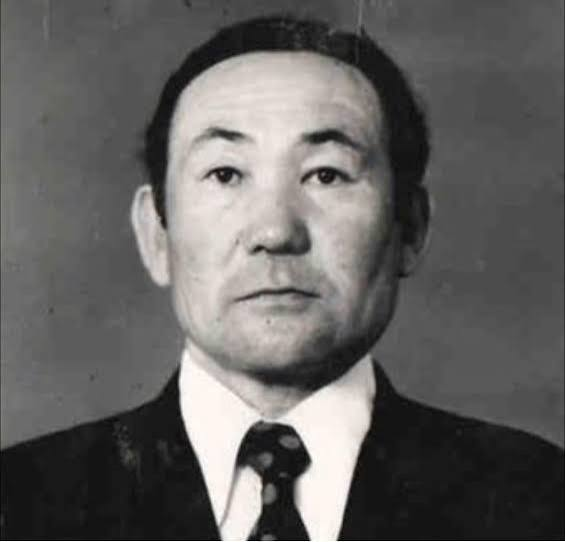

Зейнулла Елеуович
1932–2017
Семейная история · 1893–2017
Булекбаевы
Два поколения нефти
Отец строил первые промыслы Эмбы. Сын нашёл нефть под солью.
Доссор 1911 → Жанажол 1978
qazaqboss.github.io/bulekbai-ata